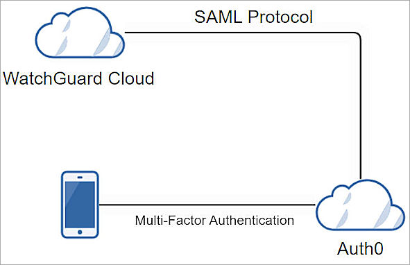
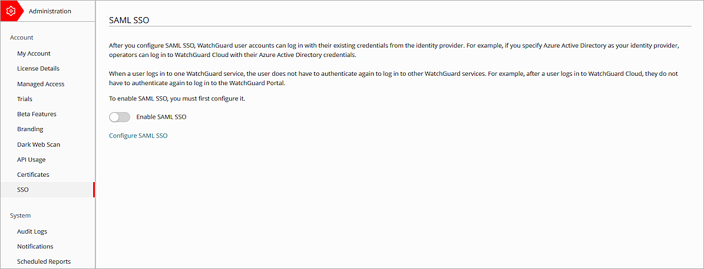
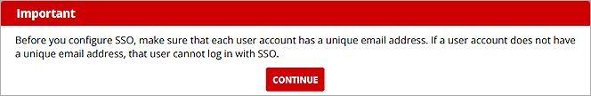
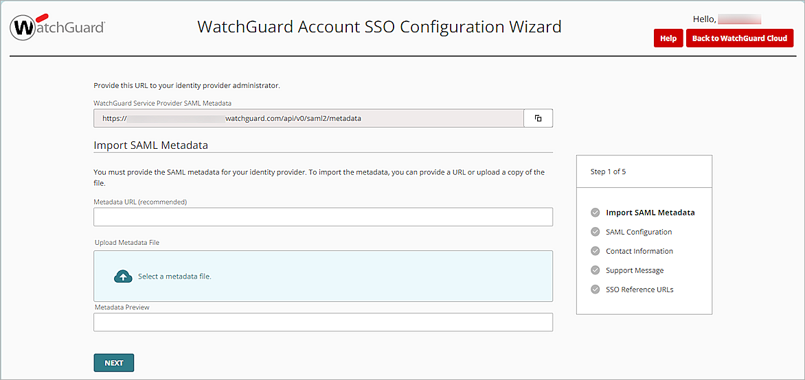
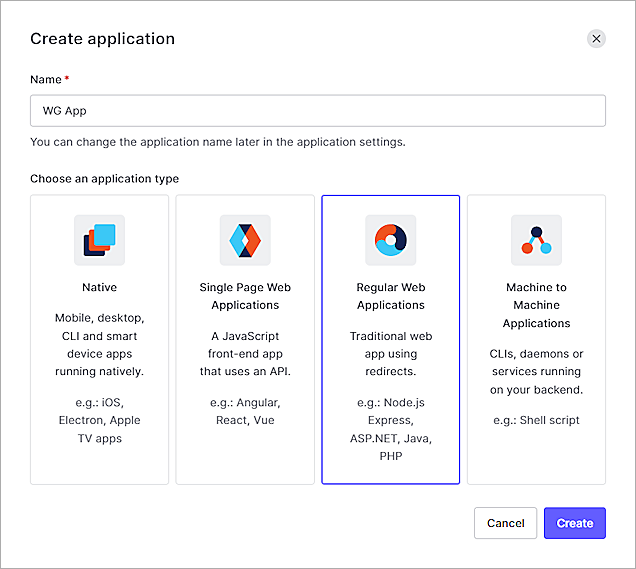
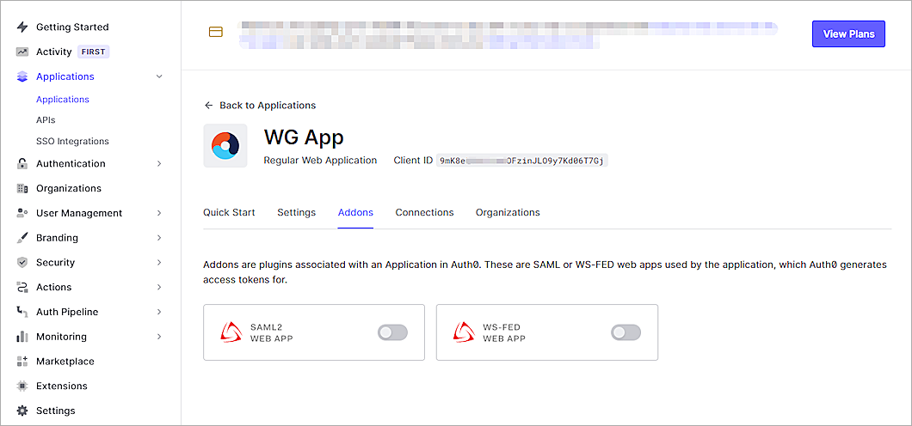
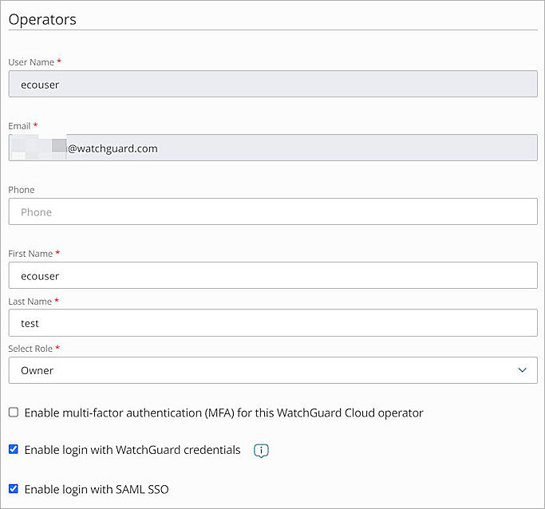

Deployment Overview
This document describes how to set up multi-factor authentication (MFA) for your WatchGuard accounts with Auth0 as an identity provider.
Contents
WatchGuard Account Authentication Data Flow with Auth0
Auth0 communicates with various cloud-based services and service providers with SAML protocol. This diagram shows the data flow of an MFA transaction for WatchGuard Cloud.

Before You Begin
Before you begin these procedures, make sure that:
- You have a tier-1 WatchGuard Cloud account, and an operator with the Owner or Administrator role.
- A token is assigned to a user in Auth0.
Additional charges might apply to use Auth0.
Configure Auth0
Before you configure Auth0, you must copy the WatchGuard Service Provider SAML Metadata URL from the WatchGuard Account SSO Configuration Wizard.
To copy WatchGuard Service Provider SAML Metadata URL:
- Log in to the WatchGuard Cloud with your WatchGuard user account credentials.
- Select Administrator > SSO.
The SAML SSO page opens.

- Click Configure SAML SSO.
The Important dialog box opens.

- Click Continue.
The WatchGuard Account SSO Configuration Wizard page opens.

- In the WatchGuard Service Provider SAML Metadata text box, copy the WatchGuard Service Provider SAML Metadata URL.
- To view the WatchGuard Service Provider SAML Metadata file, on a new tab on your web browser, enter the URL you copied in the previous step.
- To save the WatchGuard Service Provider SAML metadata file to your local computer, right-click on the page, then select Save As.
Keep the WatchGuard Account SSO Configuration Wizard page open. You need to complete the configuration on this page after the Auth0 configuration is complete.
To configure Auth0:
- Log in to Auth0 with an administrator account.
- Select User Management > Users.

- Click + Create User.
The Create User page opens.You must create the same user in WatchGuard Cloud.

- In the Email text box, type your email address.
- In the Password text box, type a password.
- In the Repeat Password text box, type the password again.
- Click Create.
The User page opens.

- Select Actions > Send Verification Email.
- Click Confirm.
An activation email message is sent to verify your email address. - Select Applications > Applications.

- Click + Create Application.
The Create Application page opens.

- In the Name text box, type a name. In our example, we useWG App.
- From the Choose An Application Type section, select Regular Web Applications.
- Click Create.
The Regular Web Application page opens.

- Select the Addons tab.
- Enable the SAML2 WEB APP option.
The Addon: SAML2 Web App page opens.

- Select the Usage tab.
- To download the Auth0 metadata file, from the Identity Provider Metadatasection, click Download.
- Select the Settings tab.
The Settings page opens.

- In the Application Callback URL text box, type or paste the value of the AssertionConsumerService Location parameter. You can copy this value from the WatchGuard Service Provider SAML Metadata file you saved in this section.
- From the Settings section, uncomment the Audience line and change its value to the entityID value from the WatchGuard Service Provider SAML Metadata file you saved in this section.
- Scroll down and uncomment the nameIdentifierFormat line.
- Uncomment nameIdentifierProbes.
- Uncomment the http://schemas.xmlsoap.org/ws/2005/05/identity/claims/emailaddress claims under nameIdentifierProbes.

- (Optional ) Click Debug.
A confirmation message appears after the debug is successful. - Scroll down the page, then click Enable.
- To close the page, in the upper right corner, click ×.
- To enable Auth0 multi-factor authentication, select Security > Multi-factor Auth.
The Multi-factor Authentication page opens.

- From the Factors section, select Push Notification Using Auth0 Guardian.
The Push Notification Using Auth0 Guardian page opens.

- Select Push Notification using Auth0 Guardian.
- Click Back to Multi-factor Authentication.
The Define Policies page opens.

- For Require Multi-factor Auth, select Always.
- Click Save.
- Click Continue.
Configure SSO for Your WatchGuard Account
To configure SSO for your WatchGuard account:
- Go to the WatchGuard Account SSO Configuration Wizard page you opened in the Configure Auth0 section.

- Click Select a Metadata File, then upload the Auth0 metadata file you downloaded in this section.
- Click Next.
The SAML Configuration options open.

- In the IDP Name text box, enter a name to identify your identity provider. In our example, we name the IDP Auth0.
- Keep the default values for all other settings.
- To proceed through the Contact Information, Support Message, pages, click Next.
The SSO Reference URLs page opens.The SSO reference URLs provide you with the direct links to the SSO log in pages for each account.

- Click Save.
- Click Back to WatchGuard Cloud.
- Select
 > My Account.
> My Account. - Select SSO. Make sure the Enable SAML SSO toggle status is green.
- To add the operators in WatchGuard Cloud, follow the steps in Add Operators to your Account. After you add an operator, make sure the Enable login with SAML SSO check box is selected.

To log in with SSO, you must have a WatchGuard Cloud Operator account and an Auth0 person account. Both accounts must have the same email address.
When you configure SAML SSO for your WatchGuard account, users can either log in with SSO or with their local user account. We recommend users log in with SSO so they do not have to re-authenticate after their initial login.
Test the Integration
To test Auth0 MFA with your WatchGuard Account, you can use push, SMS, email, one-time password, or a combination of different methods, and enable them across all users and applications.
In this example, we show the push notification using the Guardian method.
- In a web browser, go to WatchGuard Cloud.
- Click Log In With SSO.

- In the IDP Name text box, type the IDP name.
- Click Log In.
- In the Email Address text box, type your email address.
- In the Password text box, type your password.
- Click Continue.
- Approve the authentication request sent to your mobile device.
You are logged in to WatchGuard Cloud.